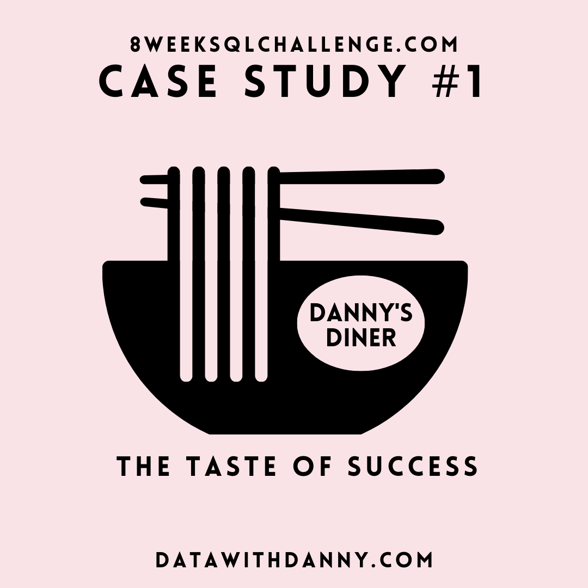

Analyzed 15% churn increase for a streaming service by evaluating subscriber demographics, watch patterns, payment methods, and customer interactions. Identified key churn drivers and enabled targeted retention strategies, reducing churn by 10%.
Designed an end-to-end Power BI dashboard for a five-star hotel, tracking key revenue metrics and enabling the Revenue team to recover 20% of market share in one month through data-driven decisions.
Crafted a storytelling-driven, interactive Power BI dashboard analyzing 10K+ survey responses, uncovering key consumer insights that informed strategic marketing decisions.
Conducted website traffic analysis using Power BI, identifying trends and key performance metrics to support content and marketing optimization. Insights led to a 7% increase in user engagement and more effective marketing decisions.

Analyzed customer data for Danny’s Diner using SQL to assess visit patterns, spending trends, and top-selling items, helping evaluate the feasibility of opening a new branch and improving customer retention by 5%.